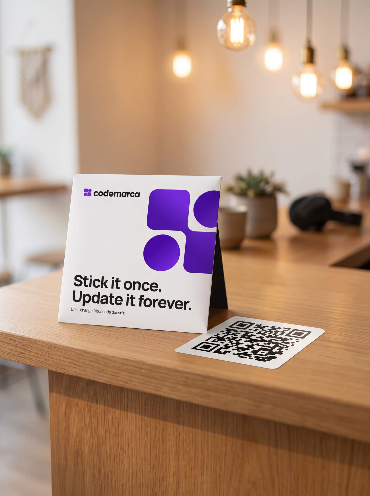

Hey, Garry.
Your page is live on both stickers.
G
Garry Singh
Live
Refer friends
Bring 50 friends. Wear your code.
Get a black tee printed with your own QR, in one of five designs. A friend counts once they sign up with your link and finish their page — they don’t have to order anything.
23/ 50
27 more to go · 6 friends are still building their page
The five designs
You pick one at 50
Your size
Ships to H.No 214, Sector 22-A, Chandigarh 160022 ·
Your tee is claimed. Pocket, size L — we
print it with your code and send it to the address above.
Your referrals
23 count · 6 waiting
Waiting friends signed up but have not finished their page. A nudge usually does it.
Your stickers
Working

Big sticker 4″ Car, bike, shutter Small sticker 1.5″
Laptop, bottle, phone case
Small sticker 1.5″
Laptop, bottle, phone case
More stickers
One more surface, same code.